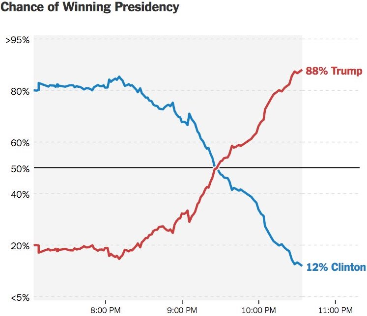

21 Bayesian Thinking and Inference
\[ \def\cD{{\cal D}} \def\cL{{\cal L}} \def\cX{{\cal X}} \def\cF{{\cal F}} \def\cH{{\cal H}} \def\bA{\mathbf{A}} \def\bB{\mathbf{B}} \def\bX{\mathbf{X}} \def\bH{\mathbf{H}} \def\bI{\mathbf{I}} \def\bU{\mathbf{U}} \def\bD{\mathbf{D}} \def\bV{\mathbf{V}} \def\bS{\mathbf{S}} \def\bW{\mathbf{W}} \def\bY{\mathbf{Y}} \def\bZ{\mathbf{Z}} \def\bK{\mathbf{K}} \def\bx{\mathbf{x}} \def\by{\mathbf{y}} \def\bs{\mathbf{s}} \def\br{\mathbf{r}} \def\bu{\mathbf{u}} \def\be{\mathbf{e}} \def\bv{\mathbf{v}} \def\bp{\mathbf{p}} \def\bw{\mathbf{w}} \def\bz{\mathbf{z}} \def\bzero{\mathbf{0}} \def\balpha{\boldsymbol \alpha} \def\bbeta{\boldsymbol \beta} \def\btheta{\boldsymbol \theta} \def\bSigma{\boldsymbol \Sigma} \def\bxi{\boldsymbol \xi} \def\bmu{\boldsymbol \mu} \def\bep{\boldsymbol \epsilon} \def\T{\text{T}} \def\Trace{\text{Trace}} \def\Cov{\text{Cov}} \def\Corr{\text{Corr}} \def\Var{\text{Var}} \def\E{\text{E}} \def\pr{\text{pr}} \def\Prob{\text{P}} \DeclareMathOperator*{\argmin}{arg\,min} \DeclareMathOperator*{\argmax}{arg\,max} \]
All models are wrong, but some are useful. – George E. P. Box (1919 - 2013)
It is possible to do prediction without data, but one cannot do prediction without a priori information. – Ray Solomonoff (1926 - 2009) in Algorithmic Probability — Theory and Applications
The inference methods we have learned so far assume that unknown (population) parameters to be estimated or tested are constants. They are fixed and their values do not change. In other words, the parameters are not random variables, and the uncertainty that arises when estimating them is entirely due to sampling variation, not the variability of the parameters themselves. Additionally, when dealing with uncertainty, we use relative frequency to describe probabilities. Lots of times the answer to our questions relies on repetitions of experiments or trials. These methods adopt the so-called frequentist philosophy (frequentism). The frequentist approach, also known as the classical approach, has dominated the statistics community since the early 20th century. This dominance followed the development of a comprehensive inference framework by several great statisticians, such as Ronald Fisher, Jerzy Neyman, and Egon Pearson. This framework, which includes confidence intervals, hypothesis testing, p-values, and statistical significance, is taught in every introductory statistics course.
In fact, there is another way of thinking about statistical inference: the Bayesian philosophy (Bayesianism). The Bayesian approach did not emerge after the frequentist approach; rather, it has historical roots that trace back to Bayes’ theorem (Bayes’ rule), named after Thomas Bayes. People in the late 18th or early 19th century already used the Bayesian philosophy to tackle problems. For instance, Pierre-Simon Laplace used the Bayesian theorem to calculate the probability that the sun would rise the next day. However, the Bayesian approach lost popularity later on because as problems became more complex, solving them within the Bayesian framework became very tedious and time-consuming, especially given the lack of powerful computing resources at the time. With the advancement of computing power starting in the late 20th century, more statisticians and scientists began to embrace the Bayesian approach.
It is important to understand the frequentist and Bayesian philosophies, particularly their differences, advantages, and disadvantages. Depending on the research question and available resources, one method may be more suitable than the other. Alternatively, it may be beneficial to combine these two paradigms to leverage the advantages of both. Currently, introductory statistics courses focus heavily on the frequentist approach. Given the ease of computation and the increasing use of Bayesian methods in scientific research, I believe it is beneficial to introduce more Bayesian thinking to STAT 101 students, not just one lecture of Bayes theorem.
21.1 Bayesian Thinking
All knowledge degenerates into probability; and this probability is greater or less, according to our expereience of veracity or deceitfulness of our understanding, and according to the simplicity or intricacy of the question. – David Hume (1711 - 1776)
Before we dive into Bayesian statistics, let’s take a quiz to determine whether you currently lean more towards a Bayesian or frequentist mindset. This quiz is adapted from Bayes Rules, a great new book on Bayesian statistics. I encourage you to spend some time on this if you would like to delve deeper.
-
When flipping a fair coin, we say that “the probability of flipping Heads is 0.5.” How do you interpret this probability? (a = 1 pt, b = 3 pts, c = 2 pts)
- If I flip this coin over and over, roughly 50% will be Heads.
- Heads and Tails are equally plausible.
- Both a. and b. make sense.
-
An election is coming up and a pollster claims that candidate Yu has a 0.9 probability of winning. How do you interpret this probability? (a = 1 pt, b = 3 pts, c = 1 pt)
- If we observe the election over and over, candidate Yu will win roughly 90% of the time.
- Candidate Yu is much more likely to win than to lose.
- The pollster’s calculation is wrong. Candidate Yu will either win or lose, thus their probability of winning can only be 0 or 1.
-
Two claims. (a = 3 pts, b = 1 pt)
(1) Ben claims he can predict the coin flip outcome. To test his claim, you flip a fair coin 8 times and he correctly predicts all.
(2) Emma claims she can distinguish natural and artificial sweeteners. To test her claim, you give her 8 samples and she correctly identifies each.
In light of these experiments, what do you conclude?
- You’re more confident in Emma’s claim than Ben’s claim.
- The evidence supporting Ben’s claim is just as strong as the evidence supporting Emma’s claim.
-
Suppose that during a doctor’s visit, you tested positive for COVID. If you only get to ask the doctor one question, which would it be? (a = 3 pts, b = 1 pt)
- What’s the chance that I actually have COVID?
- If in fact I don’t have COVID, what’s the chance that I would’ve gotten this positive test result?
Time tally up your quiz score. Are you frequentist or Bayesian? Totals from 4–5 indicate that your current thinking is fairly frequentist, whereas totals from 9–12 indicate alignment with the Bayesian philosophy. In between these extremes, totals from 6–8 indicate that you see strengths in both philosophies.
- Totals 4-5: your thinking is frequentist
- Totals 9-12: your thinking is Bayesian

- Totals 6-8: you see strengths in both philosophies
You are a frequentist or Bayesian? Are those confidence interval or hypothesis testing thing all Greek to you? Maybe it is because
21.2 The Meaning of Probability: Relative Frequency vs. Relative Plausibility
The frequentist interprets probability as the long-run relative frequency of a repeatable experiment. We’ve seen this interpretation before in Chapter 6. We know that using relative frequencies as probability has several issues:
üòï How large of a number is large enough?
üòï Meaning of ‚Äúunder similar conditions‚Äù
üòï The relative frequency is reliable under identical conditions?
üëâ We only obtain an approximation instead of exact value.
üòÇ How do you compute the probability that Chicago Cubs wins the World Series next year?

In statistical inference, our research questions or events of interest are often not repeatable or very difficult to replicate. For example, what is the probability that Donald Trump will win the 2024 presidential election? What is the probability that the Milwaukee Bucks will win the 2025 NBA championship? What would the mean income level for males be if every man was required to serve in the military for two years? Still many political scientists, sport analysts, or economists are answering those questions, right?! To rationalize their arguments, and to better answer these types of research questions, we must interpret probability in a different way.
In the Bayesian philosophy, a probability measures the relative plausibility of an event. In the Bayesian paradigm, we can still compute the probability of some event whose frequency is 0! Here, probability is a quantitative measure that quantifies the relative plausibility of the event according to some mathematical/statistical model. This probability is subjective, and it logically describes our epistemic uncertainty about some thing. Because “Milwaukee Bucks wins the 2025 NBA championship” cannot be repeatable, we are not able to observe its “objective” frequencies. However, anybody, from a 5th grade girl to an ESPN NBA analyst, can express their opinion about how likely this event occurs, based on information they currently have and their own judgmental rules. The Bayesian probability is a unified way of expressing everybody’s judgement and uncertainty about something happening, and such relative plausibility is computed through a statistical model including the information or beliefs one carries. In Bayesian eyes, no probability is purely objective. Probability is model-dependent. Think about it. When you, or even an artificial intelligence (AI) machine choose which method to use to calculate the desired probability, whether or not the event is repeatable and relative frequencies can be collected, you (AI) implicitly express your preference and judgement on how the probability, or more generally the knowledge you make inference to, is computed.
Let’s conclude the interpretation of probability by some examples. We usually see the chance of winning presidency when we watch TV news waiting for the election result. Apparently, the chance of winning is a (subjective) relative plausibility measure calculated by some political scientists using some statistical models.
For the statement “candidate A has a 0.9 probability of winning”, a frequentist might say
- the conclusion is wrong or
- weirdly say in long-run hypothetical repetitions of the election, candidate A would win roughly 90% of the time.
A Bayesian would say based on analysis the candidate A is 9 times more likely to win than to lose.
Back to our Quiz 1. For the statement “the probability of flipping Heads is 0.5”, a frequentist would conclude that if we flip the coin over and over, roughly 1/2 of these flips will be Heads. A Bayesian would conclude that Heads and Tails are equally likely.

21.3 Prior Information and Empirical Evidence
How can we live if we don’t change? – Beyoncé. Lyric from “Satellites.”
Uncertainty is a personal matter; it is not the uncertainty but your uncertainty. – Dennis Lindley, Understanding Uncertainty (2006)
A people without the knowledge of their past history, origin and culture is like a tree without roots. – Marcus Garvey (1887 - 1940)
Opinion is the medium between knowledge and ignorance. – Plato (427 – 348 BC)
Everybody changes their mind. You likely even changed your mind in the last minute. For example, suppose there’s a new Italian restaurant in your town. It has a 5-star online rating and you love Italian food! Thus, prior to ever stepping foot in the restaurant, you anticipate that it will be quite delicious. On your first visit, you collect some edible data: your pasta dish arrives a soggy mess. Weighing the stellar online rating against your own terrible meal (which might have just been a fluke), you update your knowledge: this is a 3-star not 5-star restaurant. Willing to give the restaurant another chance, you make a second trip. On this visit, you’re pleased with your Alfredo and increase the restaurant’s rating to 4 stars. You continue to visit the restaurant, collecting edible data and updating your knowledge each time.

We use data and prior beliefs to update our knowledge (posterior), and repeating. So today’s prior is yesterday’s posterior!
We continuously update our knowledge about the world as we accumulate lived experiences, or collect data.
Figure 21.2 shows Bayesian Knowledge-building Process. If you’re an environmental scientist, yours might be an analysis of the human role in climate change. You don’t walk into such an inquiry without context – you carry a degree of incoming or prior information based on previous research and experience. Naturally, it’s in light of this information that you interpret new data, weighing both in developing your updated or posterior information.

Frequentist relies on (limited) data only. In Question 3, in a frequentist analysis, “8 out of 8” is “8 out of 8” no matter if it’s in the context of Ben’s coins or Emma’s sweeteners. Thus frequentists have equally confident conclusions that Ben can predict coin flips and Emma can distinguish between natural and artificial sweeteners.

However, do you really believe Ben‚Äôs claim 100%? ü§î üòï. Let me guess. In fact, we judge their claim before evidence are collected, don‚Äôt we? ü§î You probably think Ben overstates his ability but Emma‚Äôs claim sounds relatively reasonable, right?
Frequentist throws out all prior knowledge in favor of a mere 8 data points. Bayesian analyses balance and weight our prior experience/knowledge/belief and new data/evidence to judge a claim or make a conclusion.

However, we are not stubborn! If Ben had correctly predicted the outcome of 1 million coin flips, the strength of this data would far surpass that of our prior judgement, leading to a posterior conclusion that perhaps Ben is psychic!
The concept, whether referred to as prior information or prior belief, essentially represents our current state of knowledge about something before we gather additional evidence, data, or observations. This prior knowledge serves as the foundation upon which we build our understanding or enhance our knowledge of the subject of interest.
Personally, I prefer referring to the current state of knowledge as our opinion — or, to be more modest, our two cents! As Bayesians, we are individuals with opinions. We learn and grow from our life experiences, gradually aligning our opinions closer to the truth as we become more knowledgeable. I believe (and this is my opinion) that this process mirrors how we learn anything throughout our lives, from birth until our last day. A person without opinions is akin to someone without a brain—if you ask them a question, their response might always be, “I have no idea,” “I have no judgment,” or “we should gather evidence to answer the question.”
However, as we grow up, we watch TV, read papers, attend classes, and continuously build our knowledge and judgments about the world around us. Our opinions, values, and the behavior shaped by these values and judgments define who we are. In essence, a Bayesian holds an opinion on everything!
Opinions lie at the core of the debate between Bayesians and frequentists. The reliance on opinions is a key reason why Bayes’ rule faced rejection over the past two centuries. Scientists have long sought to ensure that their work remains objective, but opinions are often viewed as inherently subjective. Consequently, frequentists and the broader scientific community have considered the subjectivity of opinions to be a fundamental flaw of Bayesianism.
However, while opinions are indeed subjective, they are by no means arbitrary, particularly when they are derived using Bayes’ rule and adhere to the laws of probability. In fact, Bayesians view opinions as fundamental strengths of Bayesian reasoning—provided these opinions are shaped by Bayes’ rule. Opinions are considered a cornerstone of rationality. This is the most contentious assertion of Bayesianism.
21.4 Asking Different Questions
Our brain has this annoying habit to think that […], if under some hypothesis, results are unlikely, then the hypothesis is unlikely. This is false. – Christophe Michel (1974 - )
An approximate answer to the right problem is worth a good deal more than an exact answer to an approximate problem. – John Tukey (1915 - 2000)
Interestingly, Bayesians usually answer the question we care about.
In Question 4,
- Bayesians answer (a) what’s the chance that I actually have COVID?
- Frequentists answer (b) if in fact I do not have COVID, what’s the chance that I would’ve gotten this positive test result?

| Test Positive | Test Negative | Total | |
|---|---|---|---|
| COVID | 3 | 1 | 4 |
| No COVID | 9 | 87 | 96 |
| Total | 12 | 88 | 100 |
\(H_0\): Do not have COVID vs. \(H_1\): Have COVID
A frequestist assesses the uncertainty of the observed data in light of an assumed hypothesis \(P(Data \mid H_0) = 9/96\)
A Bayesian assesses the uncertainty of the hypothesis in light of the observed data \(P(H_0 \mid Data) = 9/12\)
A Bayesian analysis would ask: Given my positive test result, what’s the chance that I actually have the disease? Since only 3 of the 12 people that tested positive have the disease, there’s only a 25% chance that you have the disease. Thus, when we take into account the disease’s rarity and the relatively high false positive rate, it’s relatively unlikely that you actually have the disease. What a relief.
Since disease status isn’t repeatable, the probability you have the disease is either 1 or 0 – you have it or you don’t. To the contrary, medical testing (and data collection in general) is repeatable. You can get tested for the disease over and over and over. Thus, a frequentist analysis would ask: If I don’t actually have the disease, what’s the chance that I would’ve tested positive? Since only 9 of the 96 people without the disease tested positive, there’s a roughly 10% (9/96) chance that you would’ve tested positive even if you didn’t have the disease.
21.5 Bayesian Inference
Here we use the Fake News example in the Bayes Rules! book to illustrate a Bayesian model.
- Tell if an incoming article is fake. The usage of an ! might seem odd for a real article. The exclamation point data is more consistent with fake news.
- Prior info: 40% of the articles are fake
# type n percent
# fake 60 0.4
# real 90 0.6
# Total 150 1.0
-
Data come in: Check several fake and real articles, and found
!is more consistent with fake news.
# title_has_excl fake real
# FALSE 44 88
# TRUE 16 2
# Total 60 9021.5.1 Bayesian Updating Rule

\(F\): an article is fake.
The prior probability model
| Event | \(F\) | \(F^c\) | Total |
|---|---|---|---|
| Probability \(P(\cdot)\) | 0.4 | 0.6 | 1 |
# title_has_excl fake real
# FALSE 44 88
# TRUE 16 2
# Total 60 90\(D\): an article title has exclamation mark.
Conditional probability: \(P(D \mid F) = 16/60 = 0.27\); \(P(D \mid F^c) = 2/90 = 0.02\).
-
Opposite position:
- Know the incoming article used
!(observed data) - Don’t know whether or not the article is fake (what we want to decide).
- Know the incoming article used
Compare \(P(D \mid F)\) and \(P(D \mid F^c)\) to ascertain the relative likelihoods of observed data \(D\) under different scenarios of the uncertain article status.
Since exclamation point usage is so much more likely among fake news than real news, this data provides some evidence that the article is fake To help distinguish this application of conditional probability calculations from that when \(D\) is uncertain and \(F\) is known, we’ll utilize the following likelihood function notation.
21.5.2 Likelihood Function
- Likelihood function \(L(\cdot\mid D)\):
\[L(F \mid D) = P(D \mid F) \text{ and } L(F^c \mid D) = P(D \mid F^c)\]
- When \(F\) is known, the conditional probability function \(P(\cdot \mid F)\) compares the probabilities of an unknown event \(D\), \(D^c\), occurring with \(F\): \[P(D \mid F) \text{ vs. } P(D^c \mid F)\]
- When \(D\) is known, the likelihood function \(L(\cdot \mid D) = P(D \mid \cdot)\) evaluates the relative compatibility of data \(D\) with \(F\) or \(F^c\): \[L(F \mid D) \text{ vs. } L(F^c \mid D)\]
| Event | \(F\) | \(F^c\) | Total |
|---|---|---|---|
| Probability \(P(\cdot)\) | 0.4 | 0.6 | 1 |
| Likelihood \(L(\cdot \mid D)\) | 0.27 | 0.02 | 0.29 |
- The likelihood function is not a probability function!
The likelihood function is essential to Bayesianism. When we want to update our belief or knowledge about the chance that a book is fake or not, given the information collected from the data, we need the likelihood function. Sometimes it may require a little imagination. It is like a thought experiment. If we were in the world that all books/articles are fake, what is the chance that we get the data like the one at hand? Similarly, what is that chance if we now lived in the world without any fake articles? Here the two hypotheses (fake vs. not fake), alternative theories, or proposed mechanisms postulate how data are generated and what data will be like under such mechanisms. And the likelihood function tells us which mechanism the current data fit in better.
The likelihood function is not a probability function! Although the word probability is avoided, the word likelihood is still misleading or hard to understand sometimes. The likelihood of the data is not the credence of the theory/mechanism which is \(P(F \mid D)\) obtained by the Bayes’ rule.
21.5.3 Bayes’ Rule for Posterior
To be Bayesian is to rest all knowledge upon the language of conditional probabilities. We obtain the credence of an article being fake given the fact that it has an exclamation mark in its title \(P(F \mid D)\) using the conditional probability formula, and the law of total probabilities.
\[\begin{align*} P(F \mid D) &= \frac{P(F \cap D)}{P(D)}\\ &= \frac{P(D \mid F)P(F)}{P(D)} \\ &= \frac{P(D \mid F)P(F)}{P(D \mid F)P(F) + P(D \mid F^c)P(F^c)}\\ &= \frac{L(F \mid D)P(F)}{L(F \mid D)P(F) + L(F^c \mid D)P(F^c)}\end{align*}\]
In general, the update rule has the form
\[\text{posterior = } \frac{\text{likelihood} \cdot \text{prior }}{ \text{normalizing constant}} \]
The normalizing constant \(P(D)\) is known as marginal likelihood or evidence. Here, the thing we care about, whether it is fake or not, only has two possible values, \(F\) or \(F^c\). The marginal likelihood is then a sum of two terms. It combines different reasonings in mutually incompatible versions of reality. Even two terms summed up together could make Bayes’ rule hard to apply and understand, not to mention that there could be several even infinitely many possible values of what we care about. The computation of this normalizing constant can be extremely hard, and that’s why some people do not want to use Bayesian methods, even Bayesianism makes more sense to them. Fortunately, many statistical software packages for implementing Bayesian methods have been developed, doing all the necessary computation for us. If you love the Bayesian philosophy, don’t hesitate to use Bayes’ rule!
Started with a prior understanding that there’s a 40% chance that the incoming article would be fake. Yet upon observing the use of an exclamation point in the title
“The president has a funny secret!”
a feature that’s more common to fake news. Our posterior understanding evolved quite a bit – the chance that the article is fake jumped to 89%.
| Event | \(F\) | \(F^c\) | Total |
|---|---|---|---|
| Prior prob \(P(\cdot)\) | 0.4 | 0.6 | 1 |
| Posterior prob \(P(\cdot \mid D)\) | 0.89 | 0.11 | 1 |
21.6 Bayesian Inference for Random Variables
If people do not believe that mathematics is simple, it is only because they do not realize how complicated life is. – John von Neumann (1903 - 1957)
Truth is much too complicated to allow anything but approximations. – John von Neumann (1903 - 1957)
In this section, we use the example in Chapther 3 of Bayes Rules! to illustrate how to do the inference about the unknown parameter, for example the population mean \(\mu\), using Bayes’ rule. Instead of either simply providing a point estimate or calculating the confidence interval for the parameter, the Bayesian inference estimates the whole probability distribution of the parameter given the data. The distribution is the posterior distribution of the parameter that shows our credence of the parameter value.
In frequentist approaches, the parameter is considered unknown but fixed and constant. In contrast, Bayesian philosophy treats the parameter as variable, often assuming it to be a random variable following some probability distribution. This perspective acknowledges that the parameter may frequently change over time. For instance, do you believe the mean GPA of Marquette students remains unchanged? Or that the mean height or weight of Marquette students stays constant over time? These examples illustrate that many parameters are not static but evolve, reflecting the Bayesian view of a dynamic and probabilistic world.
Even if the parameter remains fixed at an unknown value, Bayesians still consider all the values they believe the true value could possibly be when making inferences. When Bayesians say the parameter value varies, they are referring to the idea that the true value has many possible values, and their belief about the true value is not quite certain or changes. The posterior distribution, or posterior probability, represents the plausibility of each possible value of the parameter, reflecting how their understanding of the true value changes with new evidence.
In the Bayesian framework, one never places all their confidence in a single model or parameter because, as the saying goes, “All models are wrong.” In parametric statistical inference, each parameter value typically corresponds to a specific model. Even if there were a true model defined by a true parameter value, Bayesians avoid putting all their eggs in one basket. Why is that? Consider this analogy: if you believe one of five company stocks will rise in value tomorrow, would you invest all your money in just one stock, or would you diversify your investments across all five stocks, allocating different shares based on your belief in the likelihood of each stock’s price increase? Moreover, what is considered “truth” can change over time. For instance, people once believed the world was flat—a “truth” that later proved to be incorrect. Therefore, Bayesians spread their credence across a range of possibilities, acknowledging that even widely accepted truths can evolve.
Yes, I know you want to pursue the truth. But unfortunately, “truth is much too complicated to allow anything but approximations.” Also “all models are wrong.” However, some models are more believable and useful than others. The universe is too complicated to be fully described by a model, whether it is mathematical, statistical, or physical. Since we never be able to capture the truth, it would benefit us if we switch our focus to the useful models that better approximates the truth. In estimation and prediction, almost all questions have no simple, unambiguous answer because we are always uncertain about something we don’t know. Therefore, the uncertainty quantification for the unknowns is important because good uncertainty quantification better describes what the truth could possibly be. As a result, what we need to pursue or develop is a less wrong but quite useful model that well qualifies the uncertainty and our credence of the unknown parameter. In other words, the model gives us a pretty well approximated posterior distribution.
Yes, the pursuit of truth is a noble endeavor, but as the saying goes, “truth is much too complicated to allow anything but approximations.” Furthermore, “all models are wrong, but some models are more believable and useful than others.” The complexity of the universe is such that no model—whether mathematical, statistical, or physical—can fully capture it. Since we can never truly grasp the truth, it is more beneficial to focus on developing models that better approximate the truth and are useful in practice.
In the realms of estimation and prediction, most questions lack simple, unambiguous answers because there is always some uncertainty surrounding the unknowns. This is why uncertainty quantification is crucial; it provides a better description of what the truth could potentially be. Consequently, our goal should be to develop models that are less wrong but highly useful, effectively quantifying uncertainty and our confidence in the unknown parameter. In other words, we should strive to create models that provide a well-approximated posterior distribution, offering a more accurate representation of the possible truths.
Done with the concepts. Let’s see the mathematical formulation of Bayesian inference. Suppose the unknown parameter to be estimated is \(\theta\) and data are denoted as \({\bf Y} = (Y_1, \dots, Y_n)\). Both are assumed random variables before the data are collected. Our job is to do inference about \(\theta\), or obtain the posterior distribution of \(\theta\). Unlike frequentists, who develop a variety of tools for different estimation problems, Bayesians rely on just one fundamental principle: Bayes’ rule.
Let \(\pi(\theta)\) be the prior pmf/pdf of \(\theta\). Let \(L(\theta \mid y_1,\dots, y_n)\) be the likelihood of \(\theta\) given observed data \(\by = \{y_i \}_{i = 1}^n\). Then with the Bayes’ rule, the posterior distribution of \(\theta\) given \(\by\) is
\[\pi(\theta \mid \by) = \frac{L(\theta \mid \by)\pi(\theta)}{p(\by)}\] where \[p(\by) = \begin{cases} \int_{\Theta} L(\theta \mid \by)\pi(\theta) ~ d\theta & \text{if } \theta \text{ is continuous }\\ \sum_{\theta \in \Theta} L(\theta \mid \by)\pi(\theta) & \text{if } \theta \text{ is discrete } \end{cases}\]
Here, \(\Theta\) is the collection of all possible values of \(\theta\). To obtain the posterior \(\pi(\theta \mid \by)\), we need to compute the marginal likelihood \(p(\by)\) that is the core of Bayesian computation. As you can see, when \(\Theta\) contains plenty of or infinitely many possible values of \(\theta\), or when several, say \(K\), unknown parameters are estimated simultaneously in one single model, i.e., \(\theta = (\theta_1, \dots, \theta_K)\), this normalizing constant is getting hard to compute. One of the Bayesian mainstream research is to develop well-approximated and computationally efficient algorithms to compute the marginal likelihood, and hence the posterior distribution.
We don’t need to worry about the computation issue at this moment. We focus on the ideas and concepts of applying Bayes’ formula. Notice that the marginal likelihood \(p(\by)\) has nothing to do with \(\theta\) because \(\theta\) has been integrated out. Therefore, the posterior is in fact proportional to the numerator of the formula:
\[\pi(\theta \mid \by ) = \frac{L(\theta \mid \by)\pi(\theta)}{p(\by)} \propto_{\theta} L(\theta \mid \by)\pi(\theta)\]
\[\text{posterior } \propto \text{ likelihood } \cdot \text{ prior } \]
If, from our model, we determine that our posterior distribution is proportional to a known probability distribution, then our work is essentially complete. We have captured the entire shape of the posterior distribution, and the missing constant simply serves to scale it so that it becomes a valid probability distribution, with the integral under its density curve equal to one.
21.6.1 Motivation Example
- Michelle has decided to run for governor of Wisconsin.
- According to previous 30 polls,
- Michelle’s support is centered round 45%
- she polled at around 35% in the dreariest days and around 55% in the best days
- With this prior information, we’d like to estimate/update Michelle’s support by conducting a new poll.

Key: Describe prior and data information using probabilistic models.
- The parameter to be estimated is \(\theta\), the Michelle’s support, which is between 0 and 1.
21.6.1.1 Prior Distribution
- A popular probability distribution for probability is beta distribution, \(\text{beta}(\alpha, \beta)\), where \(\alpha > 0\) and \(\beta > 0\) are shape parameters.
\[\pi(\theta \mid \alpha, \beta) = \frac{\Gamma(\alpha+\beta)}{\Gamma(\alpha)\Gamma(\beta)}\theta^{\alpha - 1}(1-\theta)^{\beta-1}\]

In a Bayesian model, we write \(\theta \sim \text{beta}(\alpha, \beta)\) or \(\pi(\theta) = \text{beta}(\alpha, \beta)\).
In the prior model, \(\alpha\) and \(\beta\) are hyperparameters to be chosen to reflect our prior information.
Here is what we know before we conduct a new survey.
Michelle’s support is centered round 45%, and she polled at around 35% in the dreariest days and around 55% in the best days.
-
We can choose \(\alpha\) and \(\beta\) so that the prior mean is about 0.45 and the range is from 0.35 to 0.55 using the fact that
- \(\E(\theta) = \frac{\alpha}{\alpha + \beta}\)
- \(\Var(\theta) = \frac{\alpha\beta}{(\alpha+\beta)^2(\alpha+\beta+1)}\)
We decide to use \(\text{beta}(45, 55)\) as our prior distribution illustrating our prior belief and uncertainty about the Michelle’s support rate. The distribution is shown below.

The process of choosing the optimal or reasonable hyperparameter values is called tuning or hyperparameter optimization.
21.6.1.2 Likelihood
You plan to conduct a new poll of \(n = 50\) Cheeseheads and record \(Y\), the number that support Michelle.
What distribution can be used for modeling likelihood connecting the data \(y\) and the parameter we are interested, \(\theta\)?
- If voters answer the poll independently, and the probability that any polled voter supports Michelle is \(\theta\), we could consider
\[Y \mid \theta \sim \text{binomial}(n=50, \theta)\]
- The poll result is \(y = 30\), the likelihood is
\[L(\theta \mid y = 30) = {50 \choose 30}\theta^{30}(1-\theta)^{20}, \quad \theta \in (0, 1)\]
The likelihood function is shown below.

The likelihood tells us that if \(\text{binomial}(n=50, \theta)\) is the data generating mechanism, the data \(y = 30\) is most compatible with the binomial mechanism when \(\theta\) is 0.6. In other words, \(\text{binomial}(n=50, 0.6)\) is the model that most likely generate the data \(y = 30\).
At this point, you might be wondering why we use the beta distribution to describe our prior belief and why we consider the thought experiment as a binomial experiment. These are indeed valid questions. Typically, we choose well-known and popular distributions or functions for our prior and likelihood because they allow us to derive the posterior distribution with minimal computational effort. You could argue that more sophisticated distributions or functions might better capture our belief and the specifics of the thought experiment. However, it’s important to remember that “truth is much too complicated to allow anything but approximations,” and “all models are wrong, but some are useful.” In this context, using the beta distribution and binomial likelihood proves to be particularly useful. It simplifies the tuning of hyperparameters in the prior distribution, and the posterior can be easily obtained. Moreover, as we will see, the posterior distribution remains within the beta distribution family, which greatly aids in interpreting how we update our knowledge.
21.6.1.3 Bayesian model and posterior distribution
Once we decide the prior distribution and likelihood, a Bayesian model is specified:
\[\begin{align}Y \mid \theta &\sim \text{binomial}(n=50, \theta)\\ \theta &\sim \text{beta}(45, 55) \end{align}\]
Then our goal is to obtain the posterior distribution \(\pi(\theta \mid y)\). Here we don’t need any statistical algorithm, and we can derive the posterior distribution exactly through mathematical calculation.
\[ \begin{align} \pi(\theta \mid y) &\propto_{\theta} L(\theta \mid y)\pi(\theta) \\ &= {50 \choose 30}\theta^{30}(1-\theta)^{20} \times \frac{\Gamma(100)}{\Gamma(45)\Gamma(55)}\theta^{44}(1-\theta)^{54}\\ &\propto_{\theta} \theta^{74}(1-\theta)^{74}\\ &= \frac{\Gamma(150)}{\Gamma(75)\Gamma(75)} \theta^{74}(1-\theta)^{74} \\ &= \text{beta}(75, 75)\end{align} \]
using the fact that \(\int_{\mathcal{X}} f(x) dx = 1\) for any pdf \(f(x)\).
In the calculation, we first write down the specific expression of the prior distribution and likelihood. Then we drop all constant terms with respect to \(\theta\), for example, \({50 \choose 30}\) and \(\frac{\Gamma(100)}{\Gamma(45)\Gamma(55)}\). These terms have nothing to do with the shape of the posterior distribution.
The interesting part is that the terms related to \(\theta\) from the prior and likelihood can be combined together, ending up with a single term \(\theta^{74}(1-\theta)^{74}\). Take a closer look at this term. First, it can be written as \(\theta^{75 - 1}(1-\theta)^{75-1}\). Then this term is actually the term related to \(\theta\) in the beta distribution when \(\alpha = 75\) and \(\beta = 75\), which is called the kernel of the probability distribution. Therefore, through the calculation, we actually capture the kernel of the distribution \(\text{beta}(75, 75)\). We are done. When we get the kernel of some probability distribution in the calculation of the posterior distribution, the posterior distribution will be that probability distribution. Therefore, the posterior distribution \(\pi(\theta \mid y)\) is \(\frac{\Gamma(150)}{\Gamma(75)\Gamma(75)} \theta^{74}(1-\theta)^{74}\), the \(\text{beta}(75, 75)\) distribution. We don’t need to worry about how to calculate the normalizing constant \(\frac{\Gamma(150)}{\Gamma(75)\Gamma(75)}\). Once we get \(\theta^{74}(1-\theta)^{74}\), the only way we make the kernel become a valid probability distribution is to multiply by the constant (w.r.t \(\theta\)) \(\frac{\Gamma(150)}{\Gamma(75)\Gamma(75)}\) that has been known from the beta distribution.
Did you find that the prior and the posterior belong to the same family of probability distribution? They are both beta distributions. The prior is \(\pi(\theta) = \text{beta}(45, 55)\) and the posterior is \(\pi(\theta \mid y) = \text{beta}(75, 75)\). When the prior and the posterior belong to the same family with respect to some likelihood, such prior is called a conjugate prior.
21.6.1.4 Relationship between prior, likelihood and posterior
Figure 21.3 illustrates the prior, likelihood, and posterior distributions in Michelle’s example. First, it’s important to note that the likelihood is not a probability distribution, so it has been scaled to resemble a density function for comparison. Let’s examine how our belief about Michelle’s support is updated. Initially, we believed her support was likely around 45%. However, after incorporating the new poll results, the model suggests that support around 60% offers the highest likelihood. This new evidence leads us to reconsider, suggesting that Michelle’s support may have increased.
Bayesians are not rigid in their thinking; we continuously update our knowledge and beliefs as new evidence emerges. The updated belief, reflected in the posterior distribution, effectively combines both prior information and new evidence. As a result, the posterior distribution typically falls between the prior and the likelihood. In this case, our belief about Michelle’s support is now highest within the range of 45% to 60%.
Additionally, the variation in the posterior distribution is always smaller than that in the prior distribution. This occurs because the posterior distribution incorporates more information about Michelle’s support than the prior distribution does. The posterior distribution not only reflects the original prior information but also integrates the new data provided by the recent evidence. As a result, with more information about the parameter, we gain greater confidence in its likely value, leading to reduced uncertainty. Essentially, our belief becomes more refined and precise as we gather more evidence.
This process of belief updating can be understood more deeply through the mathematical relationship between the prior and posterior distributions. The parameters \(\alpha\) and \(\beta\) in the beta distribution are not just arbitrary numbers; they carry significant meaning. Specifically, the variance of the beta distribution decreases as\(\alpha\) and \(\beta\) increase. This explains why the posterior distribution \(\pi(\theta \mid y) = \text{beta}(75, 75)\) has a smaller variance than the prior distribution \(\pi(\theta \mid y) = \text{beta}(45, 55)\).
In this beta-binomial example, \(\alpha + \beta = 45 + 55 = 100\) an be interpreted as the “prior sample size.” Out of these 100 hypothetical prior samples, 45 support Michelle. The new data consists of a sample size of 50, with 30 supporting Michelle. Now, observe what happens with the posterior. When we combine the prior sample with the new data sample, we have a total of 150 samples in the posterior analysis. Out of these 150 data points, \(45 + 30 = 75\) support Michelle, leading to the posterior distribution \(\pi(\theta \mid y) = \text{beta}(75, 75)\). The posterior sample size is now \(75 + 75 = 150\), with exactly 75 supporting Michelle.
Through this beta distribution, we can see that the parameters \(\alpha\) and \(\beta\) reflect the amount of information we have about the parameter \(\theta\). This is how we systematically update our knowledge, with the posterior distribution representing a refined belief that incorporates both the prior information and the new data.
If each data point represents one piece of information, it’s clear that the posterior distribution now holds 150 pieces of information - 50 more than the prior distribution. Where do these additional 50 pieces come from? They come from the newly collected data. As we gather more information, the variability and uncertainty about the parameter decrease, leading to greater knowledge and confidence in the potential values of the parameter. The process of updating the posterior reflects this accumulation of information, resulting in a more precise and reliable estimate.
our posterior belief can be viewed as a weighted average of the prior and the likelihood, with the weights determined by the amount of information each contributes. In this example, the prior carries 100 pieces of information, while the new data contributes 50 pieces. Consequently, when we update our belief, the posterior belief is influenced two-thirds by the prior and one-third by the new data, since \(100/(100+50) = 2/3\) and \(50/(100+50) =1/3\). This explains why the posterior mean support rate is \(0.45 \times (2/3) + 0.6 \times 1/3 = 0.5\). The posterior reflects a balanced combination of our prior knowledge and the new evidence, weighted by the information each provides. The Bayesians are logically consistent.
21.7 Further Reading and References
All About that Bayes: Probability, Statistics, and the Quest to Quantify Uncertainty by Dr. Kristin Lennox
The Equation of Knowledge by Dr. Le Nguyen Hoang